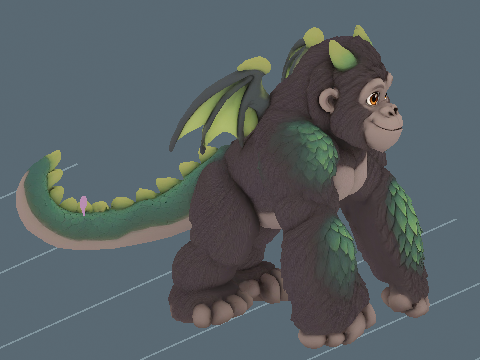

Animation previews, videos and model downloads are retained locally and are not hosted on this website. Text, assessments and still images remain available.
Ember Mountain / Creature profile
Dragorilla
Critically Endangered
Perspective modelling reference · Open image for full size
About Dragorilla
A broad-shouldered giant with powerful hands, emerald scales and folded membrane wings. Dragorilla can look imposing until it carefully cups a tiny flower between its enormous palms.
💪 Mighty companion: 20% more effective Strength levels, up to level 100, for carrying, jumping and club stamina cost. Does not grant levels.
One active creature total: following or mounted. Choosing another replaces the current creature.
Hatch bonuses
First hatch: +7,500 Strength XP and $1,000,000 Cash. Later hatches: +750 Strength XP (10%), with no further discovery Cash.
One first-hatch award per player and species, shared across qualities and sizes. The certificate shows both credited amounts with the skill icon. Fixed amounts are independent of XP boosts. All hatch bonuses
Assigned game stats. The creature, egg shell and named wild egg spawning are integrated.
Release update, 28 October 2026: the real creature model, animations, intact species egg, Standard artwork, Fine/Superior/Epic/Legendary finishes, transparent actual-shell egg icon and existing transparent creature portrait are registered. Wild eggs are enabled in the assigned biome at ordinary initialization and dawn. Current sizes, mass, rarity, income, nest homes, five-minute player-count allocation and guardian models are retained. Source checks, installed readback and detached Edit egg rolls passed; gameplay, multiplayer, mobile and real storage/rejoin remain pending. Saving and publication remain Daniel-owned. Earlier stage notes: Supplied gorilla-dragon model locally rigged and imported on 28 October 2026. Available through the Developer creature selector at the 9.8-stud base height selected by Daniel on 28 October 2026, twice its earlier 4.9-stud size. The gorilla knuckle walk uses all four limbs and keeps the wings folded. Named eggs and wild spawning remain unavailable; current biome prototype eggs are retained. Appearance and live playback await Daniel's review. Following animation update, 28 October 2026: idle movement and fitted blinking are installed and verified on the native model under plan 04b25d3ca0534bf09f8f3776dcdddc60. Evidence: output/follower-idle-all. Live following and animation acceptance remain pending.
Parent reference masses: Dragon (70.00 kg) and Gorilla (135.00 kg). Parent reference sizes: Dragon: 2.5 m (body length); Gorilla: 1.5 m (standing height). Pet weight uses the retained species calibration multiplied by relative height and relative front-to-back length. Both dimensions scale together, so individual mass still scales quadratically. Length includes the tail and uses installed model depth normalized to standard height; it is an extent, not a curved body measurement. One stud is exactly 0.28 metres. Low-bodied parents use body length; the other recorded heights and bird body lengths are size proxies. These are game balance references, with range midpoints and explicit estimates rather than measured population means. Pet height is base height times its internal scale, with no four-stud floor or extra quality height bonus. Pet kg uses scale squared. Egg kg is the base creature kg times scale, and base egg dimensions multiply directly by scale. See the scale tables for the quality bands.
A Standard pet at internal scale 1 hatches at 9.8 studs (2.744 m) and 1170.46 kg. The base statistics describe catalogue dimensions at scale 1.
Egg
Base height
7.259 studs
Base weight
1170.46 kg
The egg and creature share one internal scale. Egg kg is the base creature kg times scale. All base egg dimensions multiply directly by scale, and quality chooses the scale band.
Animations
Separate Walk and Run are available. Quality and high-speed/turn acceptance remain scoped to the individual reviews.
Motion previews and downloads are retained locally. Playback starts on request so the rest of the page stays still.
These are local model renders. They do not establish live gameplay acceptance.
At 0 studs/s: The face, wings and long tail retain a strong silhouette. The skeletal hold is too still to communicate the breathing and balance of a heavy animal.
Retained earlier assessment. The current source needs a new review; this number does not approve the changed version.
This clip holds a still pose. Its GIF has no skeletal movement.
Offline source skin with current runtime skeletal samples; not a live game capture.
Random facial overlays, blink cosmetics and look-around are omitted.
At 0.9408 studs/s: The slow four-support knuckle gait keeps the large hands grounded and preserves the face and wings. The measured, level motion is credible at this pace, but stronger shoulder-to-pelvis transfer would add mass.
Retained earlier assessment. The current source needs a new review; this number does not approve the changed version.
Offline source skin with current runtime skeletal samples; not a live game capture.
Random facial overlays, blink cosmetics and look-around are omitted.
Authored-cycle timing at the listed preview travel speed; live gameplay speed may differ. The travelling excerpt resets at the loop boundary.
At 3.26667 studs/s: The quicker knuckle exchange and longer recovery remain coherent on the repaired skin. It reads as a brisk grounded advance with cautious reach rather than a full sprint; the torso and tail could react more to each load.
Retained earlier assessment. The current source needs a new review; this number does not approve the changed version.
Offline source skin with current runtime skeletal samples; not a live game capture.
Random facial overlays, blink cosmetics and look-around are omitted.
Authored-cycle timing at the listed preview travel speed; live gameplay speed may differ. The travelling excerpt resets at the loop boundary.
Authoring comparisons
Original Walk comparisons are labelled separately from renders of repaired skins. Each records its installation state. Current runtime previews are above.
Walk candidate
Retained authoring comparisons. Current installed playback is shown above.
Repaired skin Walk candidate at its recorded fitted speed.
At 0.9408 studs/s the new repaired-skin Walk gives the long arms and hind feet clear supported exchanges, while the face and folded wings remain stable. The knuckle contacts fit the gorilla body. Pelvis and shoulder weight transfer are restrained and could be more expressive.
Assessment of this preview at the shown speed. Separate from developer approval.
Historical authoring evidence. Current installed playback and its current reviews are shown above.
Random facial controls, blinking and look-around are omitted.
Shown-speed review does not establish natural cadence at arbitrarily high gameplay speeds.
Straight Walk/Run playback, speed selection and reset now pass detached Edit checks at three scales. Live turns and gameplay acceptance remain separate.
Run candidate
Retained authoring comparisons. Current installed playback is shown above.
Repaired skin Run candidate at its recorded fitted speed.
At 3.26667 studs/s the repaired-skin Run uses quicker, longer knuckle and hind-foot strokes with a lower body than Walk. The head and wings remain coherent. It still reads as a conservative fast supported knuckle gait; stronger propulsion and body compression would sell urgency.
Assessment of this preview at the shown speed. Separate from developer approval.
Historical authoring evidence. Current installed playback and its current reviews are shown above.
Random facial controls, blinking and look-around are omitted.
Shown-speed review does not establish natural cadence at arbitrarily high gameplay speeds.
Straight Walk/Run playback, speed selection and reset now pass detached Edit checks at three scales. Live turns and gameplay acceptance remain separate.
2 November 2026. Patrol: 3 studs/s (0.84 metres/s) at 31.36 studs (8.78 metres) tall. The shown cycle repeats 0.80 times per second.
A slow, deliberate supported gait gives the large body more weight and avoids rapid arm cycling.
The existing body-animation scores remain separate. This review assesses patrol speed and cadence; it does not award a replacement animation score.

|
These are offline source-skin previews at the installed guardian scale. Route turns, obstacles, water transitions and multiplayer still need in-game review. Chase and egg-return tuning are unchanged. Existing developer decisions are preserved.
These are the exact reference inputs used for this creature. Some are range midpoints or explicit estimates, rather than measured population averages. Height and body length are labelled separately.
Scroll the table sideways on a narrow screen.
Parent inputs and their arithmetic averages. Select a linked value to open its recorded source.
Komodo dragon is the selected biological proxy: Smithsonian typical wild mass 70 kg.
Equal-sex reference: wild male 180 kg, female approximately half that; standing heights 1.75 and 1.25 m.
(Parent 1 size + Parent 2 size) / 2
How the weight was recorded
Komodo dragon is the selected biological proxy: Smithsonian typical wild mass 70 kg.
Equal-sex reference: wild male 180 kg, female approximately half that; standing heights 1.75 and 1.25 m.
(Parent 1 kg + Parent 2 kg) / 2
Check the calculation at scale 1
Average parent size
(2.5 + 1.5) / 2 = 2 m
Average parent weight
(70 + 135) / 2 = 102.5 kg
Chosen game height
9.8 studs x 0.28 = 2.744 m
Parent-derived creature weight
102.5 x (2.744 / 2)^2 = 192.94436 kg
Game balance multiplier
5x; 192.94436 x 5 = 964.7218 kg (historical parent baseline)
Retained height-only calibration
964.7218 kg
Length correction
964.7218 x 11.89 / 9.8 = 1,170.46349 kg
Catalogue creature weight
1,170.46349 kg
Base egg height, 50/50 blend
1.8 x sqrt((9.8 / 4) x (1,170.46349 / 4)^(1/3)) = 7.25947466555 studs
Matches the recorded averages and catalogue weight.
Daniel requested this fictional game balance on 30 October 2026: make Dragorilla much heavier, implemented as five times its prior base weight.
Game height is chosen for the creature design; it is not the average parent height. Individual pet height and length both multiply by saved scale. Weight uses their product, so uniform scaling remains quadratic. Values above are displayed to twelve decimal places; calculations use the full recorded values.
Scale, egg weight and carrying impact
These ranges use the actual quality bands and shared creature scale. Most rolls are near the midpoint.
Computed ranges at each quality. Carry speed is a percentage of normal movement before other modifiers.
Base rates are per second for a creature placed at Home. Eggs still incubating and creatures in inventory do not earn. Currency starts at $0. Hatched pets placed in your Home garden pay into your wallet every second while you are online. The currency is Cash. Normal income scales with saved size and quality: Standard 1x, Fine 2x, Superior 4x, Epic 8x and Legendary 16x. Followers do not earn garden income; active petting temporarily gives the petted creature 3x. See Game mechanicsXP and skill levels for the full rules. Grim Peeper pets earn $10 per second.
Reviewed
Reviewed means Daniel has reviewed the in-game model and animations and is happy with them.
Daniel tells Codex when he approves how a model looks and works. Codex records Daniel's approval and updates this shared site. Reviewed shows a tick when Daniel is happy with the in-game model and animations.
✗ Not reviewed
Daniel: ✗ Pending
Real model and animations, species egg, four shiny finishes and icons are installed. Assigned-biome wild eggs are enabled. Daniel model/animation approval and live gameplay acceptance remain pending.
Pet icon
The face icon used in the game. Labraduck also represents the Pets menu.
Collection artwork
Full-body artwork and its matching silhouette, prepared at 256 by 256 pixels for the Pets collection.